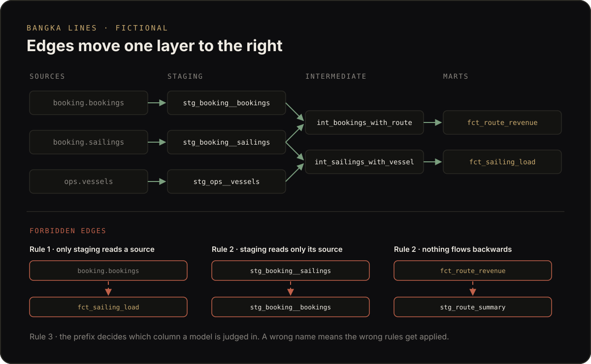
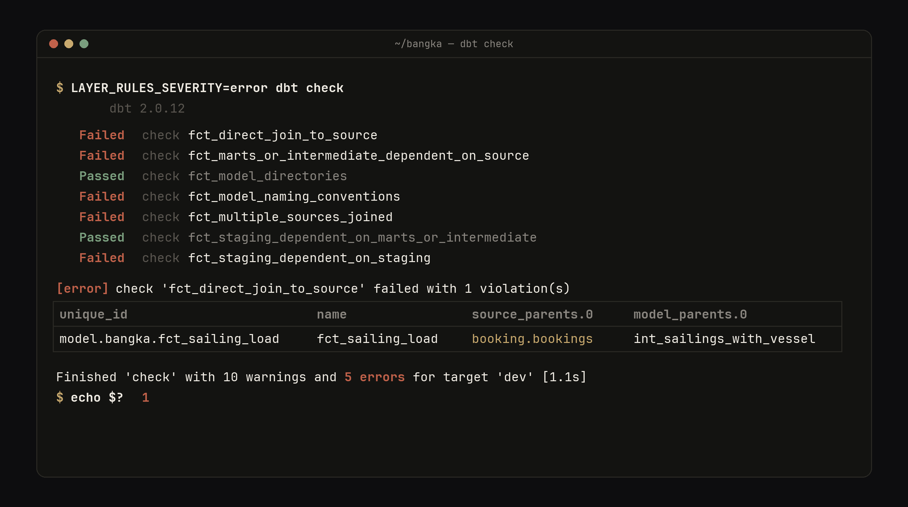
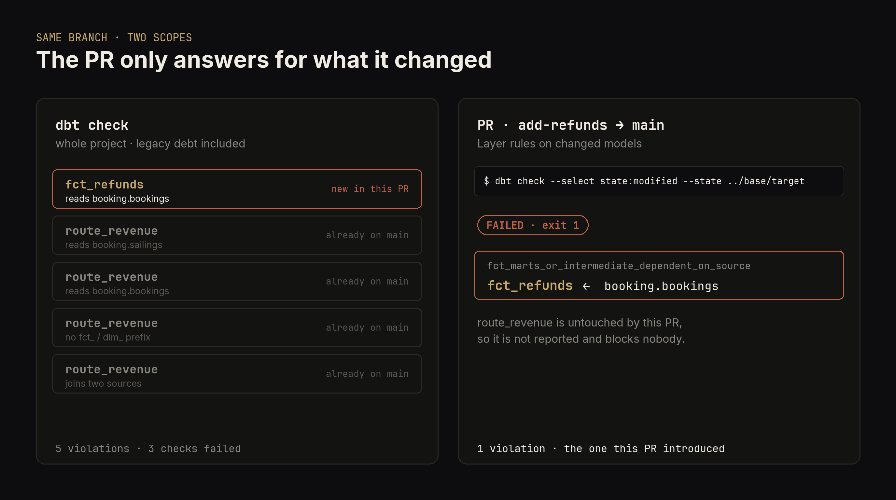
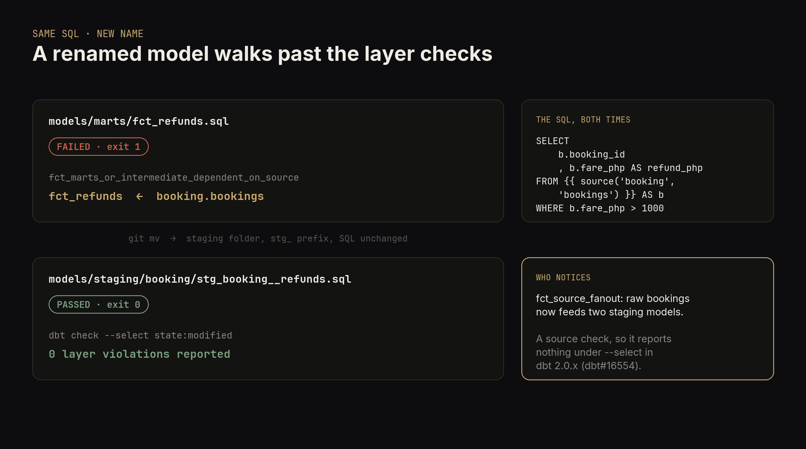

Run grep -rl "source(" models/marts models/intermediate on your dbt project. Every file it prints is a model that skipped staging, so a rename, a cast or a currency fix now lives in two places, and one copy will drift.
Nobody decided that. Someone needed a column staging didn't expose yet, the deadline was Friday, and the reviewer was busy checking the logic. A layering convention that lives in a README lasts until the first busy week. After that it's a suggestion.
- A README can't fail a pull request, so layering quietly drifts.
- Reviewers read the SQL and miss the lineage it changes.
- Since dbt 2.0, the shape of your DAG can block a merge.
Bangka Lines is fictional: an inter-island ferry operator in the Visayas, with fares in pesos. I built it as a small dbt-duckdb project and ran every command below on dbt 2.0.12 with dbt_project_evaluator 2.0.2.
Layers are a contract about where decisions live
Think of a restaurant kitchen. The prep station washes and portions the vegetables once, and line cooks take from prep, never from the delivery crate. When a line cook grabs carrots straight from the crate, the dish still goes out. But now nobody can say which carrots were washed.
In dbt the prep station is staging: one model per source table, where columns get renamed and cast. Intermediate models are where joins and business logic live. Marts are what dashboards and people query. Each layer is a promise about where one kind of decision gets made, and the folders only label it.
Three rules keep that promise:
- Only staging reads a source.
- Staging reads nothing but its source. No staging model selects from another model.
- A model's name tells the truth about its layer.

The Bangka Lines model fct_sailing_load breaks rule 1. It counts seats sold per sailing, but it reads raw bookings directly instead of stg_booking__bookings:
SELECT
s.sailing_id
, s.route
, s.seats
, COUNT(b.booking_id) AS seats_sold
FROM {{ ref('int_sailings_with_vessel') }} AS s
LEFT JOIN {{ source('booking', 'bookings') }} AS b
ON s.sailing_id = b.sailing_id
GROUP BY s.sailing_id, s.route, s.seats
The query is correct today. The day staging starts filtering out test bookings, this mart won't get the memo.
The checks behind each rule
A check works like a building inspector who reads the blueprint before anyone pours concrete. dbt 2.0 added checks: SQL queries over your project's metadata that run locally in DuckDB, with no warehouse connection. A check passes when it returns zero rows. If a check with severity: error fails, dbt build stops before compiling a single model. dbt_project_evaluator 2.x ships its rules as checks, and seven of them map onto the three rules:
fct_marts_or_intermediate_dependent_on_source flags a mart or intermediate model selecting from a source. fct_direct_join_to_source flags any model mixing a source with a ref.
fct_staging_dependent_on_staging and fct_staging_dependent_on_marts_or_intermediate flag staging selecting from another model. fct_multiple_sources_joined flags any model joining two sources.
fct_model_naming_conventions flags a prefix that doesn't match the layer. fct_model_directories flags a file in the wrong folder.
Rule 3 looks like housekeeping, but the other six depend on it. The package decides a model's layer from its prefix first (stg_, int_, fct_/dim_ by default) and only falls back to the folder when no prefix matches. Bangka Lines has a route_revenue model in models/marts with no prefix, so the folder makes it a mart. Rename it stg_route_revenue and the evaluator judges it as staging. Only fct_model_directories would notice a staging model sitting in the marts folder, and moving the file silences that too. Keep that in mind for the last section.
This is the row dbt check printed for it, trimmed to the useful columns:
check 'fct_model_naming_conventions' found with 1 violation(s)
name model_type appropriate_prefixes original_file_path
route_revenue marts fct_, dim_ models/marts/route_revenue.sql
On the deliberately broken project, five of the seven layer checks failed:

Make the rules fail the pull request
Every check in the package warns by default. I want the seven layer checks to warn on my laptop and block in CI, so their severity reads an environment variable. The &layer anchor writes it once and *layer reuses it:
# packages.yml
packages:
- package: dbt-labs/dbt_project_evaluator
version: [">=2.0.0", "<3.0.0"]
# dbt_project.yml
checks:
dbt_project_evaluator:
modeling:
fct_marts_or_intermediate_dependent_on_source:
+severity: &layer "{{ env_var('LAYER_RULES_SEVERITY', 'warn') }}"
fct_direct_join_to_source: {+severity: *layer}
fct_multiple_sources_joined: {+severity: *layer}
fct_staging_dependent_on_staging: {+severity: *layer}
fct_staging_dependent_on_marts_or_intermediate: {+severity: *layer}
structure:
fct_model_naming_conventions: {+severity: *layer}
fct_model_directories: {+severity: *layer}
Your project already breaks some of these rules, and you can't fix them all before Monday. You don't have to. Think of a spell-checker that only underlines what you typed today. Since version 2 of the package, state:modified scopes the checks the same way: dbt compares your branch with the parsed project from main and reports only the resources that changed. The CI job, abridged from the package docs, parses main to get something to compare against:
# .github/workflows/layer-rules.yml (steps only)
- run: pip install "dbt>=2.0.0,<3.0.0"
- name: Parse main to compare against
run: |
git worktree add ../base "origin/${{ github.base_ref }}"
cd ../base && dbt deps && dbt parse
- run: dbt deps
- name: Layer rules on changed models
env:
LAYER_RULES_SEVERITY: error
run: dbt check --select state:modified --state ../base/target
Both dbt parse and dbt check need a valid profile, but the checks themselves never query your warehouse.
To test it, I left the legacy route_revenue on main and opened a branch that adds fct_refunds, a new mart reading raw bookings. The check failed with exit code 1 and named only the new model. The old violation didn't block anyone.

Debt you mean to keep belongs in the exceptions variable, one named model at a time, so a full-project run can go green too:
vars:
dbt_project_evaluator_exceptions:
fct_marts_or_intermediate_dependent_on_source:
- route_revenue # owner: revenue analytics, rebuild planned
dbt_project_evaluator 2.x requires dbt 2.0. On dbt 1.x, pin the package to [">=1.0.0", "<2.0.0"]. There the rules are models and tests: run dbt build --select package:dbt_project_evaluator and set severity under data_tests: dbt_project_evaluator:. Version 1 evaluates the whole project on every run, so fix existing violations or add them as exceptions before you make it blocking.
What the checks can't see
An inspector who only reads blueprints never sees what's inside the walls. So I tried to cheat. I renamed fct_refunds to stg_booking__refunds and moved it into models/staging/booking/. The SQL stayed the same: one source, a filter on fares. The pull request check passed with exit code 0.
That isn't a bug. A staging model with exactly one source parent is precisely what rule 1 asks for. The checks read the edges of your DAG, so a staging model that filters, aggregates or applies business logic passes every rule.
One check did notice: fct_source_fanout, because raw bookings now fed one more model. It's a source check, though, and in dbt 2.0.x --select can't scope sources yet, so with state:modified it reports nothing. I'd close the gap two ways. An unscoped step:
dbt check fct_source_fanout # unscoped, non-blocking step in the same job
And a CODEOWNERS entry (GitHub's file that requests reviewers by path) for models/staging/, so someone who cares about staging sees every new file there. A check finds the edges. A person still has to judge the logic.

Try this at work
Add the package and run dbt check with default severities. Count the violations of the seven layer checks. Add every existing one to the exceptions variable with a comment naming the owner. Then switch on LAYER_RULES_SEVERITY=error with state:modified in CI. From that day, a new violation needs either a fix or an exception someone signs off in review.
Takeaways
- Enforcement belongs in the build — a check with
severity: errorstopsdbt buildbefore any model compiles. - Three rules cover the drift I see most — sources only into staging, staging reads only its source, names match layers.
- Naming carries the other rules — the evaluator infers a model's layer from its prefix, then its folder.
- Scope CI to the change —
state:modifiedblocks new violations without forcing you to fix old debt first. - Checks see lineage, not logic — a renamed model can pass, so add an unscoped source fanout step and a code owner.
Sources and version notes
Checked on 18 November 2026 against dbt 2.0.12 and dbt_project_evaluator 2.0.2. The source-selection limit is tracked in an open issue and may be fixed in a later 2.0.x release.
- Checks — dbt Developer Hub, v2.
- Modeling rules and structure rules — dbt_project_evaluator.
- Running the package as a CI check and configuring exceptions.
- Migrating to version 2 — the 1.x vs 2.x differences.
- dbt-labs/dbt#16554 —
dbt check --selectcan't scope source rows. - How we structure our dbt projects — dbt Labs' staging, intermediate and marts guide.
Which layer rule does your project break most often, and would you have guessed it before running the check?